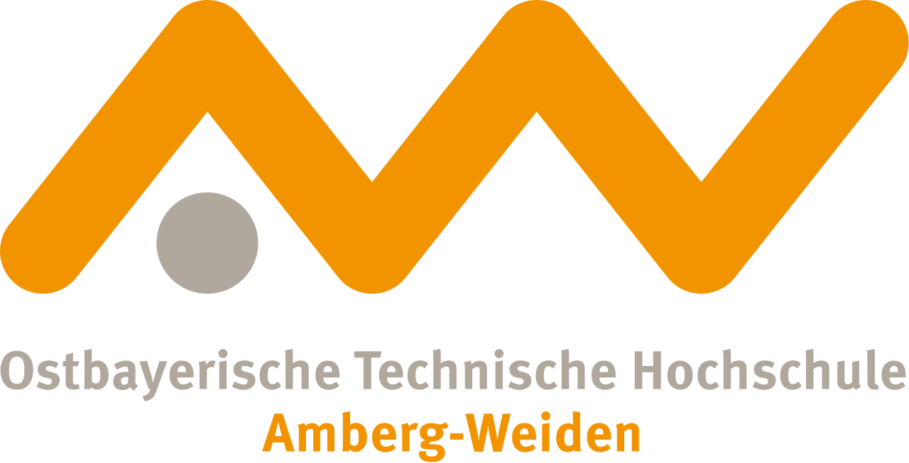

Extra-Occupational Bridging Courses for Non-Traditional Students

OTH Amberg-Weiden
Stephan Bach
Abstract
The Ostbayerische Technische Hochschule Amberg-Weiden (OTH - Technical University of Applied Sciences) offers extra-occupational mathematical bridging courses for non-traditional students with little prior knowledge. In a blended-learning scenario, the self-study component includes quizzes with STACK questions. These questions were implemented with a specific focus on the needs of non-traditional students, e.g. providing support for dealing with input syntax and using partial crediting. The questions use several of STACK's input types, including multiple-choice questions, which help establish successful mathematical practice. Both lecturers and students emphasize the importance of STACK for the program's success.
Introduction
In Germany, there are various opportunities to enrol at universities to study a vocational qualification instead of a higher education degree.¹ For example, people with certain professional degrees, such as technicians, get a general university entrance qualification. Often these students do not have the mathematical prior knowledge which is expected by universities in STEM and business fields. Furthermore, the widespread bridging courses are usually not enough for this audience, and they require more extensive extra-occupational mathematics courses. At the Ostbayerische Technische Hochschule (OTH) Amberg-Weiden there is a long tradition of preparation courses for students with vocational backgrounds. Over time these courses have been adapted to changes in the legal framework and were further developed between 2016 and 2018 into the program BeVorStudium. The joint project "OTH mind", funded by the German Federal Ministry of Education and Research, developed a blended learning scenario that included STACK quizzes.
A majority of participants are in their mid-twenties, have a vocational education in the technical area and aim for studies like mechanical or electrical engineering or computer science. Institutions who are offering preparation courses for this audience face several challenges. One is the high number of topics to be covered in just a few months. Another is the limited number of time slots for in-person courses, with participants typically having a full-time job. This makes the self-study component an important part of the course. STACK is well-suited for the self-study environment, helping students apply new notions to routine problems and get individual feedback.
Execution
BeVorStudium consists of two mathematics modules (plus one module in physics). Mathematics I contains topics typically included in middle grade syllabi, in particular elementary algebra. Mathematics II deals with important content from senior grades, especially calculus. In-person courses take place every other weekend, combined with an online based self-study component in between. Students are encouraged to complete regular online quizzes with STACK questions, discussed in detail in [2].
Each quiz consists of six to ten normally multi-part STACK questions. When designing the quizzes, the following criteria were followed to meet the needs of non-traditional students:
- Input support. Some participants, being out of school for many years, consistently struggle with the input syntax. Therefore quizzes always provide syntax hints, and make use of STACK's tools for syntax validation. For example, answers are not accepted unless they are of the same type (e.g. equation, number, etc.) as the model answer.
-
Partial credits. Partial credit is used extensively to keep students motivated, and reward correct ideas where possible.
-
Specific feedback. Questions put an emphasis on "specific feedback" rather than "general feedback". Specific feedback addresses individual mistakes, and provides positive feedback on correct ideas. If a question includes general feedback too, this usually provides an illustration of the correct answer or a hint to the approach but not a model solution. Questions and model solutions can be discussed in class, which, according to the lecturer, usually takes a significant amount of "well invested" time.
-
Variety of input types. In mathematical practice it is important to have a variety of material, approaches and perspectives [3]. To support this idea, the quizzes use a variety of input types. Besides a majority of questions with algebraic input there are also interactive JSX-Graphs and regular multiple-choice questions (MCQs).
Multiple-Choice Questions
Although there are a number of problems connected to the use of MCQs in the assessment of STEM subjects - for example, when dealing with reversible mathematical processes - there are situations when this question format is more appropriate than others [4, 5]. In the preparation program, BeVorStudium MCQs serve various purposes:
- Avoiding syntax issues. As mentioned previously, some participants struggle with input syntax. MCQs give students the option to just focus on the (new) mathematics first, without worrying about the syntax.
- Addressing different learning objectives. While questions with algebraic input often assess mathematical skills, MCQs are suitable for the assessment of conceptual and procedural knowledge as well as conceptual understanding.
- Establishing high quality practice. Different input types help establish a variety of perspectives and connections in practice (see above) and meet the needs of different types of learners.
Since Moodle has built-in support for MCQs, it might seem unnecessary to use STACK for these questions. However, STACK comes with its own set of MCQ input types. Besides having a consistent layout in all questions, STACK's MCQs have several features that improve the didactical quality of the questions:
-
Developing interesting question formats. STACK enables authors to implement multiple-choice formats which are recommended for university level assessment [6] like multiple True/False or matching questions.
-
Using typical STACK features. Many STACK features such as randomization, partial crediting and in particular differentiated feedback can also be used in MCQs. For example, it is possible to give feedback on options of a checkbox question which are not chosen, or to point out contradictions between certain options.
-
Implementing multi-part questions. There are typical mathematics problems which not only require a numerical or algebraic answer but also some verbal addition ("What is the type of the extremum?", "Is this answer unique?", "What is the monotonic behaviour of the function?" etc.). These questions are implemented well through STACK MCQ.
- Efficiency. Using STACK-MCQs can be very efficient, especially when using Maxima plots. An implemented question can be used as a template for similar questions that use another class of functions or another set of propositions.
Results
The experience at the OTH Amberg-Weiden is that non-traditional students value in-person classes. It is therefore important to maintain a close connection between online quizzes and in-person lectures. By doing so, a majority of students also complete the STACK quizzes. During the trial period of the course in 2018 on average 97.2% (Mathematics I, N=9) and 62.5% (Mathematics II, N=16) of active participants² completed the STACK quizzes. These percentages were similar in subsequent years.
The integration of STACK questions led to an increased amount of time used for self-study. In the 2018 evaluation of the module Mathematics II, eight out of ten respondents said they invested more than three hours per week on self-study - in addition to a full-time job and extensive in person lectures. Both students and lecturers acknowledge the importance of STACK as a part of the preparation program. Individual feedback of alumni shows that some participants pass their math exam at the end of the first term with a good or even very good result.
What's next?
After three years of using STACK within BeVorStudium, questions have been consistently improved. There are however some approaches for further development:
-
Extending the specific feedback. The specific feedback still mainly focuses on deficits ("You have done something wrong"), and should be extended to address correct ideas as well.
-
Making exercises problem oriented. Problem orientation is a principle of successful mathematical practice [3], and means to give exercises a superordinate perspective. This can be achieved by adding reflective MCQs.
-
Considering different approaches. Currently most of the questions focus on the result rather than the approach. Implementing questions that focus on the approach could help students better understand mathematical methods and identify mistakes. This could be implemented by asking for certain extensions or using the "Equivalence reasoning" input type.
References
[1] Kultusministerkonferenz. Hochschulzugang für beruflich qualifizierte Bewerber ohne schulische Hochschulzugangsberechtigung. https://www.kmk.org/fileadmin/veroeffentlichungen_beschluesse/2009/2009_03_06-Hochschulzugang-erful-qualifizierte-Bewerber.pdf, 2009.
[2] S. Bach. STACK-Fragen zur Unterstützung der Selbstlernphasen in einem Studien-vorbereitungsangebot für beruflich Qualifizierte. In: Contributions to the 1st International STACK conference 2018, DOI: 10.5281/zenodo.2563803, 2019.
[3] H. Winter. Begriff und Bedeutung des Übens im Mathematikunterricht. In: Mathematik lehren, 2, pp. 4-16, 1984.
[4] C. J. Sangwin, I. Jones. Asymmetry in student achievement on multiple-choice and constructed-response items in reversible mathematics processes. In: Educational Studies in Mathematics, 94, pp. 205--222, DOI: 10.1007/s10649-016-9725-4, 2016.
[5] S. Bach. Using multiple-choice questions in STACK -- reasons and examples. In: Contributions to the 3rd International STACK Conference 2020, DOI: 10.5281/zenodo.3945809, 2020.
[6] M. A. Lindner, B. Strobel, O. Köller. multiple-choice Prüfungen an Hochschulen? Ein Literaturüberblick und Plädoyer für mehr praxisorientierte Forschung. In: Zeitschrift für Pädagogische Psychologie, 29 (3-4), pp. 133-149, 2015.
¹ The legal framework for the current arrangement was given by a decision of the Standing Conference of the Ministers of Education and Cultural Affairs (KMK) in 2009 [1].
² Active participants are considered to be those who attended at least half of the lectures.